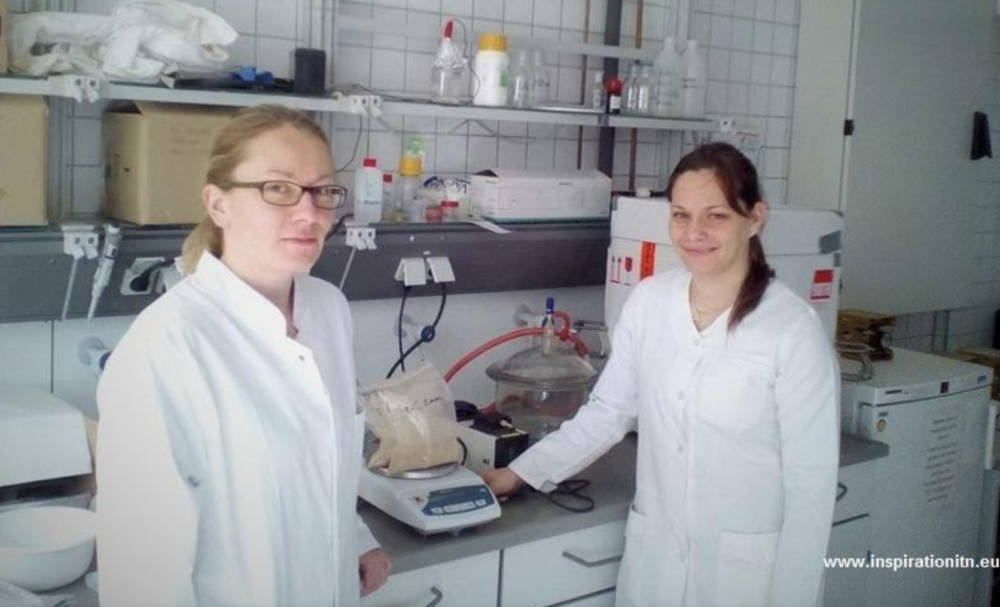

Presentations
Workshop/Conference of the University of Tübingen/Stuttgart
02/07/17 - 07/07/17. Einsiedeln, Switzerland. Maximilian Ramgraber.
Stakeholders:Diverse scientists and students
presentation about project, established contact to a research group working on a related topic, got invited to give a talk in Stuttgart, Germany, next spring.
Presentation during DocDays 2016
29/11/16 - 30/11/16. Colditz, Germany. Izabella.
Stakeholders:Students
Introduction of INSPIRATION Marie Curie Project, and objectives of the project. Interaction with participants.
Presentation during DocDays 2016
29/11/16 - 30/11/16. Colditz, Germany. Izabella.
Stakeholders:Students
Introduction of INSPIRATION Marie Curie Project, and objectives of the project. Interaction with participants.
Master thesis presentation
10/11/2016 - ongoing. TU Darmstadt, Darmstadt, Germany. Alexandra.
Stakeholders:Students, Scientists, University Professors
The work of two master students is related to the ITN project and they are supervised by the ESR and also by the supervisory team of the ESR.
Official project meeting and presentation
22/11/2017 - 22/11/2017. Flintbek, Germany. Alexandra.
Stakeholders:Landesamt für Landwirtschaft, Umwelt und ländliche Räume; Ministerium für Energiewende, Landwirtschaft, Umwelt, Natur und Digitalisierung
Oral presentation: first project outcomes.
